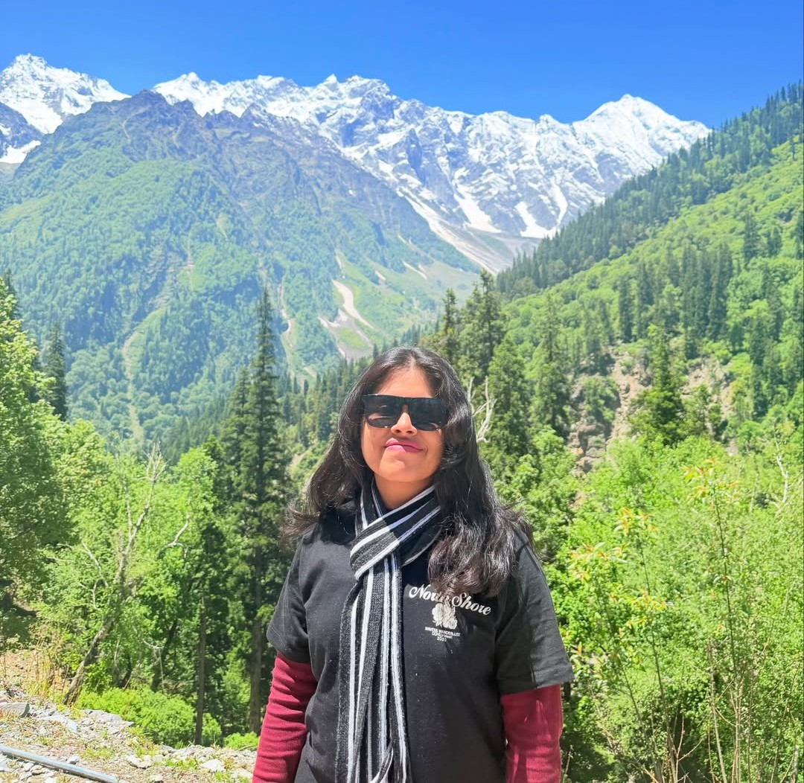
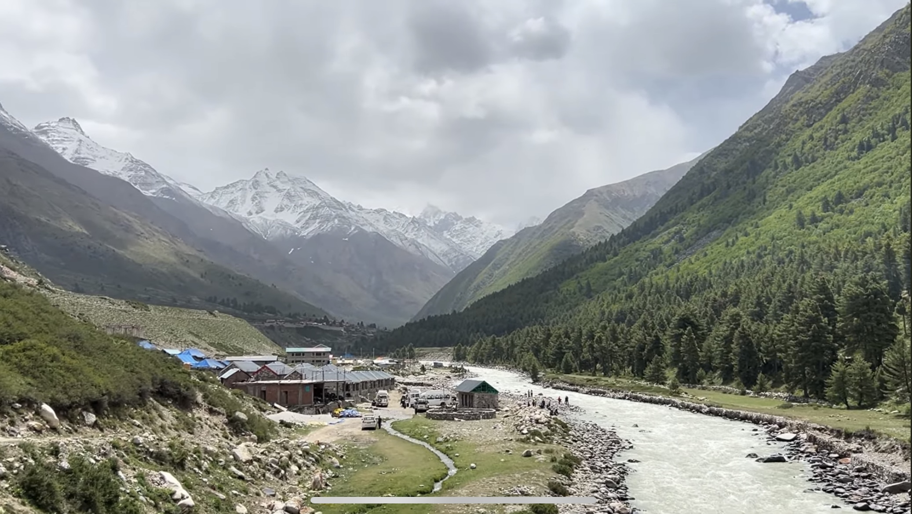
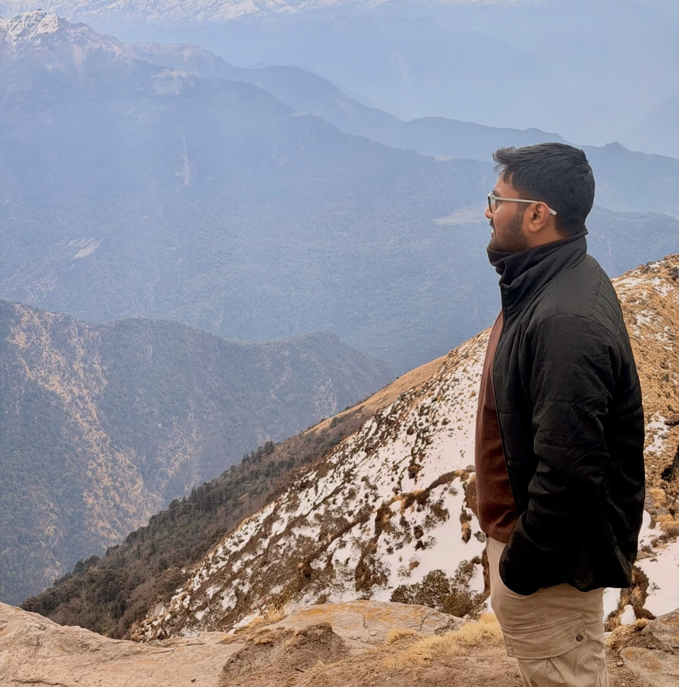

Rashmi Singh
Co-Founder
Drawn to the quiet of high places, Rashmi shapes journeys that restore the traveller and protect the trail.

Est. in the Himalayas
India's first sustainability‑focused trekking company
Walk gently. Heal deeply. Leave only footprints.
The Healing Trails was founded by Rashmi Singh and Sahil Kesharwani — a shared commitment to responsible, low-impact adventure that gives back to the trails and the communities that call them home.

Co-Founder
Drawn to the quiet of high places, Rashmi shapes journeys that restore the traveller and protect the trail.

Co-Founder
Sahil turns a love of the outdoors into treks that tread lightly and leave every mountain better than we found it.